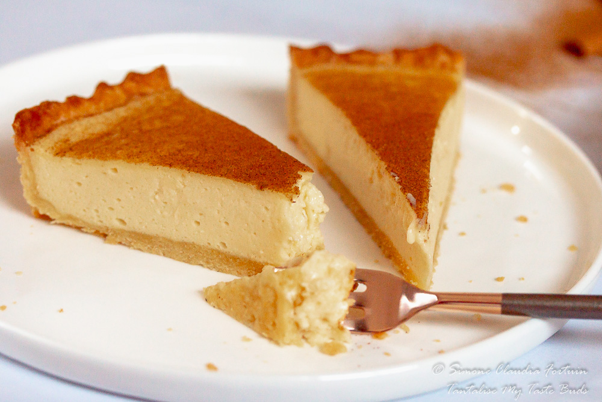

Milk Tart/Melktert – Easy, Rich and Creamy – Perfect entertaining pie with an easy press-on pastry crust.
- 125 g butter, softened
- 1/2 cup castor sugar
- 1 egg
- 2 cups cake flour
- 1 tsp baking powder
- pinch of salt
- 2 1/2 cups milk
- 1 cinnamon stick
- 1 egg
- 1/2 cup sugar
- 2 tbsp flour
- 2 tbsp corn flour
- 1 tsp vanilla paste
- large tbsp butter
- 1 tsp ground cinnamon